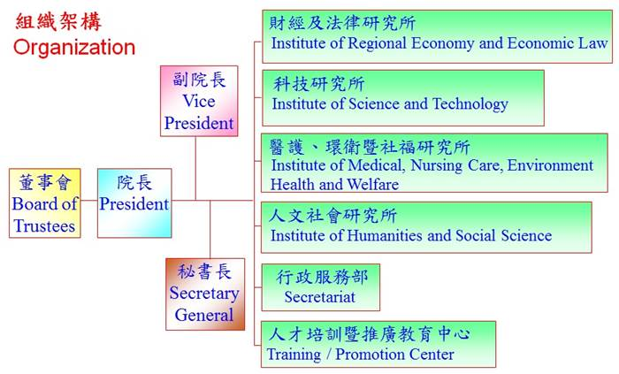

Research Objectives
Established in 1995, the Asia Pacific Research Foundation (APRF) is a publicly supported, nonprofit, nonpartisan private research center, engaged in practical research work and activities, registered in Taiwan and located in Kaohsiung and Taipei.
- Research Objectives
- R&D Policy of the Foundation
- Organizational Structure
Table of Contents
R&D Policy of the Foundation
- 1. Offering research nd consulting services to governmental agencies and for private sectors.
- 2. Strengthening cooperation among research institutions, and promoting research and scholastic exchange in the Asia Pacific region.
- 3. Sponsoring or supporting research and academic activities, as well as accepting research and consulting assignments and subventions from outsides…
Organization and Diagram
The institute has recruited well-known individuals and scholars from the southern and northern regions of Taiwan to form the board of directors. The board of directors is the highest governing body of the institute and is composed of experts from various fields. Below the board, there are positions such as the president, vice president, and directors of each department. They are responsible for overseeing the institute's operations, departmental affairs, and research promotion. The organizational structure diagram is as follows:
{kind=link}
| 組織架構表 | ||||
|---|---|---|---|---|
| 院長：湯紹成博士 | ||||
| 副院長:陸振翮博士 | ||||
| 醫護環衛與社福研究所所長:潘懷宗博士 | ||||
| 人文社會研究所所長:汪明生博士 | ||||
| 秘書長: 劉性仁博士 | ||||
| 顧問群(依姓氏筆劃) | ||||
| 王萬里 | 王信賢 | 王建偉 | 朱惠良 | 江明修 |
| 何思慎 | 李樑堅 | 杜震華 | 周進華 | 侯漢廷 |
| 孫安迪 | 高長 | 高家俊 | 張鈞凱 | 張競 |
| 郭盈蘭 | 陳國樑 | 費鴻泰 | 劉梅君 | 鄭光禮 |
| 盧信昌 | 羅友志 | 嚴震生 | 鐘琴 | |